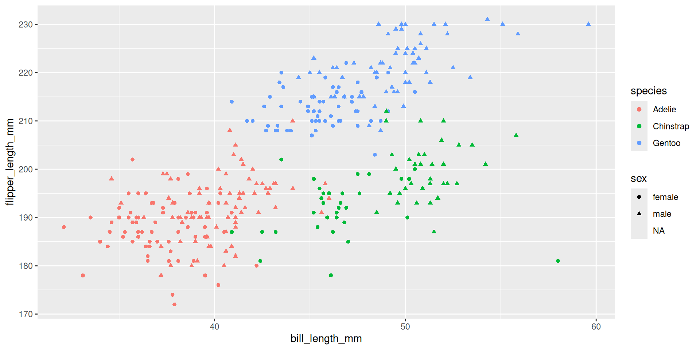

Final Exam Review Module 2
Git to Strings
Agenda
- Git
- Data Wrangling
- Data Viz and Grammar of Graphics
- Project 3: ER Visits
- EDA and Explanatory DA
- Joins and Pivots
- Strings
- Project 4: EV Power
Git
Git Basics
- Git is part of your toolbox to do computations with (includes R and the unix shell) - Version control system that helps you track changes to files and collaborate with others
- A repository (or “repo”) is a directory that contains your project files and the history of changes made to those files
Common Git commands:
git init: Initialize a new Git repository.git clone <url>: Clone an existing repository from a URL.git add <file>: Stage changes to a file for the next commit.git commit -m "message": Commit staged changes with a message.git push: Push committed changes to a remote repository.
Data Wrangling
Base R vs. dplyr
Base R lets you subset data frames using $, [], and logical expressions, but this often becomes messy and hard to read:
# A tibble: 6 × 14
name height mass hair_color skin_color eye_color birth_year sex gender
<chr> <int> <dbl> <chr> <chr> <chr> <dbl> <chr> <chr>
1 <NA> NA NA <NA> <NA> <NA> NA <NA> <NA>
2 <NA> NA NA <NA> <NA> <NA> NA <NA> <NA>
3 <NA> NA NA <NA> <NA> <NA> NA <NA> <NA>
4 <NA> NA NA <NA> <NA> <NA> NA <NA> <NA>
5 <NA> NA NA <NA> <NA> <NA> NA <NA> <NA>
6 <NA> NA NA <NA> <NA> <NA> NA <NA> <NA>
# ℹ 5 more variables: homeworld <chr>, species <chr>, films <list>,
# vehicles <list>, starships <list>[1] NAHow is dplyr better?
Reusing clean data frames
Using readable verbs (filter(), select(), mutate(), etc.)
Referencing columns without quotes
Producing consistent data frames as output
Review Question
Q: In Base R, how do you compute the average height of characters from Tatooine?
Answer
[1] 169.8Core dplyr functions
slice(): pick rows by number
# A tibble: 1 × 15
name height mass hair_color skin_color eye_color birth_year sex gender
<chr> <int> <dbl> <chr> <chr> <chr> <dbl> <chr> <chr>
1 C-3PO 167 75 <NA> gold yellow 112 none masculine
# ℹ 6 more variables: homeworld <chr>, species <chr>, films <list>,
# vehicles <list>, starships <list>, height_in <dbl>select(): pick columns by name or helper
# A tibble: 87 × 1
homeworld
<chr>
1 Tatooine
2 Tatooine
3 Naboo
4 Tatooine
5 Alderaan
6 Tatooine
7 Tatooine
8 Tatooine
9 Tatooine
10 Stewjon
# ℹ 77 more rowsfilter(): pick rows by condition
# A tibble: 0 × 15
# ℹ 15 variables: name <chr>, height <int>, mass <dbl>, hair_color <chr>,
# skin_color <chr>, eye_color <chr>, birth_year <dbl>, sex <chr>,
# gender <chr>, homeworld <chr>, species <chr>, films <list>,
# vehicles <list>, starships <list>, height_in <dbl>mutate(): create or transform columns
# A tibble: 87 × 15
name height mass hair_color skin_color eye_color birth_year sex gender
<chr> <int> <dbl> <chr> <chr> <chr> <dbl> <chr> <chr>
1 Luke Sk… 172 77 blond fair blue 19 male mascu…
2 C-3PO 167 75 <NA> gold yellow 112 none mascu…
3 R2-D2 96 32 <NA> white, bl… red 33 none mascu…
4 Darth V… 202 136 none white yellow 41.9 male mascu…
5 Leia Or… 150 49 brown light brown 19 fema… femin…
6 Owen La… 178 120 brown, gr… light blue 52 male mascu…
7 Beru Wh… 165 75 brown light blue 47 fema… femin…
8 R5-D4 97 32 <NA> white, red red NA none mascu…
9 Biggs D… 183 84 black light brown 24 male mascu…
10 Obi-Wan… 182 77 auburn, w… fair blue-gray 57 male mascu…
# ℹ 77 more rows
# ℹ 6 more variables: homeworld <chr>, species <chr>, films <list>,
# vehicles <list>, starships <list>, height_in <dbl>summarize(): collapse to single row
# A tibble: 1 × 1
avg_height
<dbl>
1 NAReview Question
Using dplyr, how do you compute the average height of characters from Tatooine?
Answer:
# A tibble: 1 × 1
avg_height
<dbl>
1 170.Chaining with the Pipe Operator
- The pipe operator
|>allows you to chain multiple dplyr functions together in a readable way.
# A tibble: 1 × 1
`mean(height)`
<dbl>
1 170.Grouped Operations
- Use
group_by()to perform operations by group
- It marks groups in the data, allowing functions like
summarise()andmutate()to work group by group instead of on the whole dataset
Example
Without grouping:
# A tibble: 1 × 1
avg_height
<dbl>
1 NAWith grouping:
# A tibble: 87 × 16
# Groups: homeworld [49]
name height mass hair_color skin_color eye_color birth_year sex gender
<chr> <int> <dbl> <chr> <chr> <chr> <dbl> <chr> <chr>
1 Luke Sk… 172 77 blond fair blue 19 male mascu…
2 C-3PO 167 75 <NA> gold yellow 112 none mascu…
3 R2-D2 96 32 <NA> white, bl… red 33 none mascu…
4 Darth V… 202 136 none white yellow 41.9 male mascu…
5 Leia Or… 150 49 brown light brown 19 fema… femin…
6 Owen La… 178 120 brown, gr… light blue 52 male mascu…
7 Beru Wh… 165 75 brown light blue 47 fema… femin…
8 R5-D4 97 32 <NA> white, red red NA none mascu…
9 Biggs D… 183 84 black light brown 24 male mascu…
10 Obi-Wan… 182 77 auburn, w… fair blue-gray 57 male mascu…
# ℹ 77 more rows
# ℹ 7 more variables: homeworld <chr>, species <chr>, films <list>,
# vehicles <list>, starships <list>, height_in <dbl>, height_mean <dbl>Review Question
Q: Explain what happens if you do group_by() → mutate() → summarize().
Answer
A:
- group_by() creates groups
mutate() calculates new variables within each group (like group means, group z-scores)
summarize(), when applied afterward, collapses each group to one row, producing one summary per group
After summarize(), the grouping is dropped automatically, because each group has been reduced to one row and grouping no longer makes sense
Data Viz and Grammar of Graphics
What is the Grammar of Graphics?
A systematic way to describe and build visualizations built from three core components:
Data
Aesthetic mappings (link variables → visual channels)
Geometries (how data becomes marks: points, lines, bars)
Review Question
Q: What is one example of an aesthetic mapping? What visual channel does it use?
Answer
A: An example is mapping species to color. This uses the color visual channel to encode differences between species.
Different geometries
Different geoms = different ways to summarize a variable
- geom_point(): scatterplots (two continuous variables)
- geom_line(): line plots (continuous variable over time)
- geom_bar(): bar plots (categorical variable counts or summaries)
- geom_histogram(): histograms (distribution of a single continuous variable)
- geom_boxplot(): boxplots (distribution summaries by category)
… and more! Depends on the use case
Example components of ggplot

Data: palmerpenguins::penguins
Aesthetics: x, y, color, shape
Geometry: geom_point()
Project 3: ER Visits
Core skills:
- Data cleaning (using dplyr)
- EDA (including missing value analysis)
- Communicating findings (using ggplot2)
EDA vs. Explanatory Data Analysis
EDA
Exploratory Data Analysis
- Open-ended exploration of data to find patterns or anomalies
- Often uses many plots and summary statistics
Example questions to answer:
- What are the cols and rows?
- Is there any missing data?
- What are the distributions of key variables?
Explanatory Data Analysis
- Focused on communicating specific findings or insights.
- Uses clear, well-designed visualizations to tell a story.
Example tools to use:
- Clear titles and labels
- Setting aesthetics and themes
Joins and Pivots
Joins
- Joins combine two data frames based on a common key.
- Types of joins:
- Inner join: keeps only matching rows.
- Left join: keeps all rows from the left table, matching from the right.
- Right join: keeps all rows from the right table, matching from the left.
- Full join: keeps all rows from both tables, matching where possible.
- Inner join: keeps only matching rows.
Pivots
- Pivoting reshapes data between wide and long formats.
pivot_longer(): converts wide format to long format.
pivot_wider(): converts long format to wide format.
Review Question
Q: When would you use a left join instead of an inner join?
Answer
A: You would use a left join when you want to keep all rows from the left table, even if there are no matching rows in the right table. This is useful when you want to preserve all data from the primary dataset while adding information from a secondary dataset where available.
Strings
String Basics
- Strings are sequences of characters enclosed in quotes.
- Common stringr functions:
str_length(): gets the length of strings
str_c(): concatenates strings
str_sub(): extracts substrings
str_detect(): checks for pattern presence
str_view(): visualizes patterns in strings
Regular Expressions
- A sequence of characters expressing a string or pattern to be searched for within a longer piece of text.
- Search for:
- Literal characters
- Metacharacters
- Character sets
- Character classes
- Literal characters
Review Question
Q: How would you use str_detect() to find all strings that contain the word “data”?
Answer
[1] TRUE FALSE TRUE FALSEProject 4: EV Power
Core skills:
- Data cleaning (using stringr and regex)
- Table joins and pivots
- Mapping (using ggplot2, sf, leaflet)
- Communicating findings (using Quarto Dashboards)
Summary
- Git helps manage version control and collaboration.
- dplyr simplifies data wrangling with readable functions and piping.
- The Grammar of Graphics provides a framework for building visualizations.
- EDA is exploratory, while Explanatory Data Analysis focuses on communication.
- Joins and pivots are essential for combining and reshaping data.
- String manipulation is crucial for handling text data in R.
- Practice these concepts to prepare for the final exam!